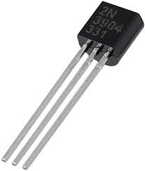
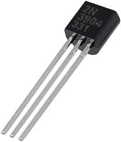

Here are some Pictures.

TRANSISTOR

MARK III

ASSEMBLY
LANGUAGE

TRANSISTORS AND
VACCUM TUBE
Now Lets Learn About The Third Generations Of Computer
|  TRANSISTOR |
MARK III
|
ASSEMBLY
|
TRANSISTORS AND
|
Now Lets Learn About The Third Generations Of Computer